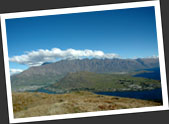
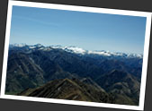
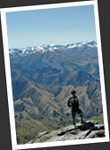

第九章
皇后鎮 Queenstown
若果說紐西蘭是世上刺激玩意之都，那麼皇后鎮 Queenstwon 必定是全紐西蘭刺激玩意的橋頭堡．這兒是個商業味濃厚的旅遊鎮，但卻是能者居之，當之無愧．在這兒，你可以玩笨豬跳, 噴射船, 激流, Canyon Swing, Skydiving, 爬山單車, 四驅車, 滑雪......連笨豬跳的始創人 A. J. Hackett，也以 Queentwon 在為他的大本營．這兒是個甚麼東西都有的地方，任何人來到，都總會找到一些自己喜愛的東西．
在交通上，Queenstown 亦作為南島西南部的一個交通樞紐．因為路線上的安排，我共到訪了 Queenstown 兩次，而每次來到這兒，除了四圍閒逛，到處發呆，發掘有趣的東西外，我都一定選擇做我最喜愛的免費活動：登山．
第一次走的是消耗較少，三至四小時的路線 Queenstown Hill．依著地圖，在 Queenstown 內左轉右轉，找到了登山的入口．路徑上放有不少資料板，向遊人講解 Queenstown 的歷史．一路上山，穿過了一片很陰深的樹林，長在這兒的松樹好像全都枯掉，變成深啡色，高高的把外面的陽光全都擋住，感覺彷如置身電影中的鬼魅森林之內一樣．風偶爾吹動樹林，樹幹發出吱嘎聲音，感覺就像樹兒們在說話一樣．一隻綠色頭，白色肚子，紐西蘭獨有的巨型鴿子 New Zealand Pigeon 忽然飛過，忽然讓我覺得這兒其實充滿生命力．
爬出灌木層，來到草叢茂密的山頂，這兒的景色十分開闊．一口氣爬到 Queenstown Hill 的頂點，Queenstown 附近一帶的景色盡收眼底．包括巨大的湖泊 Lake Wakatipu，Queenstown 對岸的群山 The Remarkables，還有北面看不到盡頭，連綿起伏的群山．山頂這兒有個像藏族人的瑪尼堆的石堆，或許紐西蘭的登山人士也喜歡學著堆石頭？
第二次來到 Queenstown，我走的是更具挑戰性，八至十小時的路線 Ben Lomond．比起 Queenstown Hill，這條路線難走多了．一直都是上坡路，而且臨近山頂的一段還十分陡峭．我在 hostel 認識了一個德國女孩，聽到我說要走 Ben Lomond，又嚷著要去．我因為想一個人獨自享受風景，所以沒有與她同行．後來我們在山上相遇，看到她面紅耳赤，上氣不接下氣的辛苦樣子，我還慶幸她沒有跟我一起走哦！我雖然也走得辛苦，但畢竟有了一定的登山經驗，可以應付下來．正是有付出才有收獲，站在 1748 米高的 Ben Lomond 山頂之上，所看到的景色，是令人無法忘記的壯觀．之前在 Queenstown Hill 上看到的美景立時給比下去．
登上 Ben Lomond 的捷徑是先坐纜車到半山，然後才開始徒步．只是我這等又窮又要骨氣的人就不會做這種事，從 Queenstown 自己摸路上山，不斷的上坡路，穿過森林，來到半山纜車站的位置，再繼續找上山的路．一路上山，一路望著目標：Ben Lomond 山頂，看似很近，可是走來走去，就總是有這麼一段距離．
好不容易來到最後攻頂的一段路，來到這個高度後，便很少東西能夠阻擋視野了！景觀隨之而變得很開闊．遠處連綿起伏的幾十個雪山忽然出現在眼前，這可說是我有生以來看過最震憾人心的風景了！實在美不可言！推動我繼續向山頂一步一步的前進．這天的太陽很猛，我的飲用水不太夠，正是又熱又燥．忽然在一塊大石後面的陰涼處發現有一大片積雪，兩個登山者正在收集冰塊來當食水．我也不甘後人，走上前去，抓下了一塊雪，就放進口中，讓它慢慢在口中溶化，這才是真正冰涼透心的感覺呢！
來到 Ben Lomond 的山頂，就發覺一路上山的辛苦都是值得的．放在我眼前的，是一個三百六十度無比壯闊的景色．眼前是數不清數目的雪山山峰，分為前，中，後三個層次，毫無保留地把它們的陡峭折曲的姿態展現在我的眼前．一切實在太震懾人心了，眼前的風景一點也不真實．這真是壯觀得誇張哦！看著這風景，我又怎麼捨得下山呢！